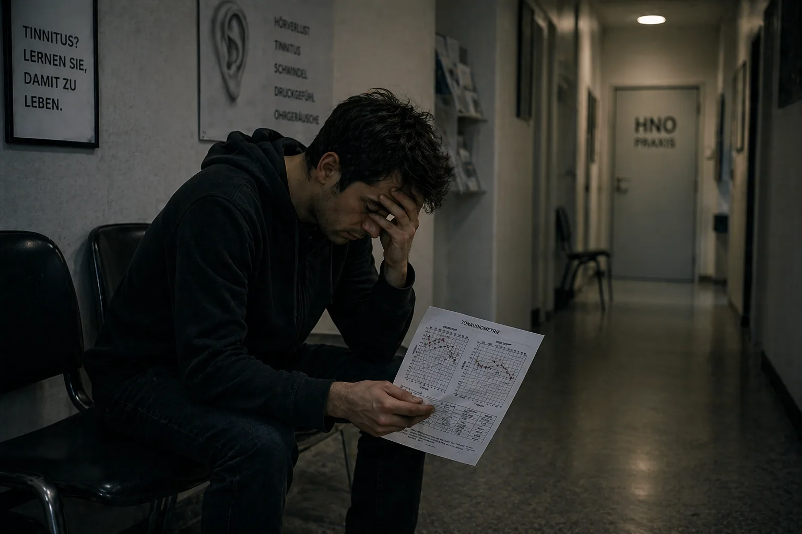

My Path Into Tinnitus Hell – Part 1: The Descent
Hello, my name is Dustin Müller. As someone who was once affected (and several times over), I felt an extreme need to bring this site into being. With my years of research, real biohacking protocols, and my own experience, I want to show others affected by tinnitus how I personally found my way to a complete recovery. But before we dive deep into the mechanisms, I have to tell how this all began for me in the first place. And it wasn't a medical accident — it was a head-on crash.
Looking for the short version? This long version goes into every detail — the audiograms, the ENT visits, every single breakthrough. If you want it more compact, the short story is the right place.
Fall 2011: The Invincible Body and the Pre-Damage
You're 23, have endless energy, and you think your body can shrug everything off. With this mindset, I treated my ears the same way. I loved music. For years, I listened over headphones so loudly that my parents could hear it through the closed bedroom door. The system was already „softened up,“ without me knowing it.
It all started through my cousin. Since I had never really been to a club before, he insisted I come along to the U60311 in Frankfurt. I had a queasy feeling, but agreed anyway. Already at the staircase down, I felt how brutal the bass was, physically. Naively, I picked what I thought was the best spot inside — about 10 meters directly in front of the massive speakers, with my left ear pointed straight at the sound source. That was the mistake that knocked over the first domino.
The Morning After: The Deceptive Peace
Already as the door closed behind us, I felt the insane pressure on my ears — much stronger on the left. Everything sounded muffled, like underwater. My cousin said this was normal and would go away. Since I was drunk, I fell into bed. The next morning I crashed straight back into the pillow trying to get up — my balance system was shot to hell, a heavy mechanical pull to the left.
Since I had extreme primal trust in my body's regenerative powers, I almost took it with humor: time will sort this out. And so it seemed: on day 2, the leftward pull got better, the pressure feeling almost disappeared. I exhaled — thought I had gotten away with it.
Day 3: The Monster Awakens
Day 3 after the club. I woke up and suddenly heard a sound like a refrigerator beep. What the hell? I put my head against the wall. Listened at the outlet. Checked the computer, the alarm clock. Nothing. Then I cupped my hands over my ears.
Oh shit. It's coming from inside me. It's in my head.
I stood there for minutes in shock. What is this? Will it stay now? In the left ear: a humming, hissing, sirens, and a loud beep. In the right: a quiet beep. Despite the shock, I thought: it'll go away again.
The Software Poisoning (The 14-Day Window)
On the internet, within minutes, I came upon the answers: sudden hearing loss and inner ear damage. Permanent hearing loss, often tinnitus. And then the sentence that froze the blood in my veins: „It must be treated within 14 days — otherwise the whole thing becomes chronic and you keep it for life.“ On the forum tinnitus.de, I read threads from people who had been living with the thing for 5 years. Five years? Oh holy shit. From a physical defect, this turned into a massive psychological threat.
The Betrayal in White (My First ENT Visit)
I drove to my childhood ENT physician. Hope. Salvation is right around the corner. I told him about the club visit and the symptoms. He, already slightly annoyed: „Yeah, just don't listen to it. Listen to some music to drown out the tones.“ I pushed back: „But it has to be treated within 14 days, right? And is more sound exposure really sensible?“ He: „First we'll do an audiometry.“ Said it and left the room. My faith began to crumble.

The Horror of Silence (The Audiometry)
Stepping into the soundproof booth, I first noticed how heavy my hearing damage really was. In that absolute silence, every natural masking fell away — the sounds in my ears were unbelievably loud. The test consisted of three parts: determine tinnitus frequency and loudness, measure general hearing capacity, bone conduction at the skull.
The Verdict
The doctor explained to me with the report in hand that my hearing was permanently damaged and that nothing could be done about it. Shocked, I asked about chances. Again slightly exasperated: „You have to learn to live with it. Don't listen to it, distract yourself, put on headphones.“ On my absurd question of whether I could continue going to clubs: „Yes, that won't cause any problems.“ With that, he said goodbye.
The Vow and the Drive Home
The way home was sheer hell. A weight of a thousand pounds. In my desperation, I briefly thought: either I get rid of this, or I don't want to live anymore.
(In retrospect: this was an overwhelming feeling of pressure in that moment, not an actual intent. But for anyone reading this who is currently in a similar place — please reach out. You are not alone. 988 Suicide and Crisis Lifeline (US) or your local emergency services.)
But once at home, the bottomless grief suddenly turned into defiance. I cannot believe that no doctor in Germany knows what tinnitus is. I clenched my fists:
„Either the tinnitus goes, or I go. I will not allow this thing to dominate my life. I have to figure out for myself what can be done.“
The Wild West of Treatment Approaches
I educated myself and stumbled upon an overwhelming abundance of „therapies“:
- Cortisone & Ginkgo: blood flow-enhancing and anti-inflammatory agents — seemed plausible for hearing recovery.
- Jaw and neck (TMJ disorder/cervical spine): theories that tensions trigger the sounds. But since I had definitely contracted my tinnitus through the club bass, my bullshit radar went off.
- TRT and masking: covering up with sounds. I could actually reduce the tinnitus short-term that way — but when I turned off the sound, it came back more aggressively and louder. (Today I know: every new sound forces the already-empty hair cells to work — they burn through their last ATP, which they actually need for healing.)
- Nutritional supplements: I laughed at those people back then. What idiots, I thought. That I would later crack my tinnitus through exactly this path — real cellular energy, ATP production, the right nutrients — I never could have dreamed of.
The Second ENT Visit: The Fatal Advice
On the morning of the 2nd ENT appointment, the tinnitus was suddenly massively amplified. (Today I know: it was the nightly sound exposure through the white noise that had brought my cells to their knees again.) The second ENT physician was friendly and uplifting. He prescribed ginkgo, recommended sufficient sleep and exercise. On the headphones question: „That's actually helpful for distraction.“ (From today's cell-biological perspective, an absolutely fatal piece of advice.) On the 3-month-chronification question, all that came was: „Let's see... you can also learn to compensate for it, meaning to fully tune it out.“ There it was again, that half-sentence that ruled out any real recovery.
The Deceptive Hamster Wheel
So days and weeks passed. During the day I was distracted by school. In the evenings, I escaped into the deceptive masking loop: headphone music and constant sound exposure through waterfall sounds. With that, I could make it bearable short-term. But biologically, I was going in circles: I held my exhausted ears in permanent stress through the soundscape. My cells were burning their last ATP processing this artificial noise instead of using it for physical repair. Pure survival mode.
The Second Crash: Hyperacusis and the Vertigo Backflip
One morning, suddenly the massive pressure feeling in the left ear was back. I tried to ignore it, drove to school. Since I still trusted the doctor's advice, I made a fatal mistake on the drive: favorite song on the car radio very loudly. I should have turned around — but classes cost money, so I drove on. (This loud music was the very last drop for my completely exhausted cells.)
In the first class, sudden severe sound distortion and painful oversensitivity to normal sounds set in — hyperacusis. (Today I know: the „shock absorbers“ of my ear, the outer hair cells, had used up their last ATP.) Over the course of the next few hours, the pressure in my left ear became more and more brutal. Then it happened: my entire field of vision started to rotate vertically — like a half-flip in my head. The world stood on its head. After seconds, my vision normalized. What remained: severe unsteady dizziness, massive leftward pull, muffled hearing on the left. (The ion backup in my inner ear had become so massive that it had flooded the adjacent balance organ.)
Full of panic, I tried to hold out. As soon as the break started, I made myself scarce. The drive home was reckless — because of the extreme dizziness, I had to keep correcting the wheel every few seconds. But I just wanted to be safe. This second collapse was the ultimate turning point: I cannot keep sitting this out.
ENTs 3 and 4: Pills Instead of Answers, Phantom Lie, and Psych Label
I got an emergency appointment that same day with the 3rd ENT. Audiometry, smell test, a „positional vertigo“ test that changed nothing. (Today clear: no loose crystals, but endolymphatic hydrops — head wobbling doesn't help with that.) A colleague pushed in the diagnosis: „another sudden hearing loss, will go away in 14 days“ — or maybe from blocked sinuses, pure symptom guessing. Then she dropped the bombshell: „You know, many fall into depression. If symptoms remain, I'll gladly prescribe you antidepressants.“ I sat there and thought I wasn't hearing right. My balance system had collapsed, and her solution was... psychotropic medication? I swore to myself: never.
At the 4th ENT — the „specialist“ — I delivered my entire story. Instead of going into the cellular level, came ice-cold: „Have you ever heard of cognitive behavioral therapy? Your problem is that you focus too much on your hearing problems and thereby maintain the tinnitus.“ I held back: „But the sound arose physically through the club visit!“ He didn't react at all. On the cortisone question: „That would only make sense in the first 14 days. With you, we have to assume a phantom sound.“ At the end, he again recommended TRT with counter-sounds — and shut me down when I explained that my tinnitus only became more aggressive through masking. The system had capitulated and shifted the blame onto me.
The Absolute Low Point: Isolation and System Failure
The nightmare culminated at my own birthday party (one and a half months after the sudden hearing loss). Hyperacusis and sound distortions were driving me crazy. My own tinnitus was so loud that it completely drowned out what others were saying. A bizarre phenomenon was added: letters sounded completely different than before — an „S“ sounded like an „F“, a „T“ like a „D“. I couldn't take the sensory overload anymore, broke off my own birthday and fled home. In the days that followed, the dizziness became so extreme that I was on the verge of falling over at times — a symptom complex that medically corresponds to Ménière's disease. I was completely isolated and shut off. Abandoned by life and abandoned by the doctors who had only drilled into me that my head was spinning out and I needed antidepressants.
The First Key Experience: The Proof Against the Phantom Lie
Since I've had eczema and psoriasis since childhood, an ear canal infection escalated of all times late on the weekend — so I dragged myself out of necessity to the emergency room of the Frankfurt University Hospital. The ENT physician reached for a tiny suction device to vacuum the ear canals one after the other. And exactly in this moment, the absolute key experience happened: as the shrill noise raged in my left ear, I simultaneously felt how the tinnitus there reacted aggressively and explosively to this noise. Then the right ear: exactly the same.
That was a perfect A/B test on my own body. My mind tore apart the specialist's statements on the spot: a psychological phantom sound does not react simultaneously to a purely mechanical noise stimulus in the respective ear canal! This reaction was for me the absolute proof: the faulty source was still sitting down there in my ear. The cells were screaming for help instantly under the noise.
Cortisone Infusion and the Gauze Bandage Miracle
The ENT casually asked how long ago the sudden hearing loss had been. Two months. Since I was still under the magic 3-month deadline, cortisone would be worth a try. I agreed immediately and stayed overnight on the ward. In the hospital bed, I researched further and landed on a tinnitus patient's own website. What I read there was cell-biologically logical: more noise dramatically worsens tinnitus. Plus the link to Dr. Wilden and his low-level laser therapy, which specifically stimulates ATP production in the cells. It fit 100% with the suction experience.
After 3 days I was discharged — with thick gauze bandages in both ears because of the ear canal infection. Already during these days, I noticed: the tinnitus had become noticeably quieter! At first I thought it was the cortisone. But when I read on Dr. Wilden's site how elementally important it is to actively seek silence — the lightning struck me: my ears had been heavily sealed off through the gauze bandages for days! A normal ENT would never have let me bandage my ears so extremely. I had unwillingly received the proof that absolute quiet does something.
The Bang, the Dynamic, and the Protocol of Absolute Silence
A few days later, another important insight followed. During an application with a small cream bottle directly at the ear, there was a sudden loud bang. In a fraction of a second, my tinnitus howled up — BUT it returned within a very short time to its „normal“ level. It became crystal clear to me: my tinnitus was nothing „fixed,“ but extremely dynamic! It reacted in real time to noise with worsening — and reduced itself when I consistently sought silence.
I took drastic action. From now on, I actively spent as much time as possible in complete silence. Music, films, meeting friends went from everyday occurrence to rare „rewards“ — and when, then strictly without headphones, very quietly, very briefly.
Six Months of Silence — and the Stagnation at 25%
ACTUALLY, the tinnitus reduced from month to month. In retrospect, about 1/4 of the original loudness after about 8 months. However, I obviously couldn't pull this complete silence off 100% perfectly — even necessary car drives (200 km there and back) brought the tinnitus back up to the loud level. I had practically wasted a whole week of careful protection.
Then something frustrating: at about 20–25% improvement, the recovery suddenly stopped. I drove my isolation to the extreme — avoided conversations, constantly wore earplugs, had even banned the ticking wall clock from my room. But nothing more happened. Zero.
Atlas Correction, TMJ, and Cervical Spine — the Dead End
Then I had the idea to engage deeply once again with jaw, cervical spine, and tinnitus. I came across TMJ disorder (Craniomandibular Dysfunction) and got a bite splint at the dentist. At an orthopedic center, a cervical spine syndrome was diagnosed and strength training (Med X) prescribed. I pulled both through with iron discipline, kept holding silence in parallel. After 2 months, disillusionment set in: TMJ and cervical spine complaints improved — but on the tinnitus, ABSOLUTELY NOTHING changed.
Last straw: Atlas correction. I drove 200 km to an alternative health practitioner who repositioned my crooked atlas with a special device and hand maneuvers. After weeks too, that brought — nothing. The only side product: the alternative health practitioner recommended psyllium husks, a mineral earth mixture, and probiotics for my gastritis. And actually: my gastritis, which had been resistant for almost a year, disappeared. That impressed me — conventional medicine had failed, the alternative health practitioner had delivered.
Vitamin B12 — the Most Important (Accidental) Key Experience
My father back then suffered from polyneuropathy. His family doctor diagnosed a pronounced vitamin B12 deficiency and prescribed injections. When one evening he gave himself an ampule directly in front of my eyes, he said shortly afterward: pain reduced, he felt warmer again. Such a small red vial produced such a tangible physical effect?
I researched and read: B12 is THE nerve vitamin. Vegetarians (I had been one since age 15!) and gastritis patients (mine had only recently subsided) are particularly at risk. I had a blood test at the family doctor: deficiency confirmed, at the very lowest range of the norm scale. But the doctor refused me injections — „still in the normal range.“ Crestfallen, I left the doctor's office.
When my father needed his next B12 shot in the evening, I plucked up courage and let myself get one too. Important: I expressly advise against doing this without medical supervision. Wow — within minutes, I felt better blood circulation, comforting warmth, a clearer head. I went to bed relaxed.
THE NEXT MORNING: the absolute miracle. Seconds after waking up, I noticed it immediately — the tinnitus had massively reduced! From 25% improvement suddenly to a good 40% improvement. I lay there speechless and close to tears. Over the course of the day, it worsened again — but not back to the old level. And the next morning again: 40%.
On Dr. Wilden's site I read that his laser specifically stimulates ATP production in the cells. And B12 is essential for exactly this ATP production. CLICK! Maybe I don't need the expensive laser at all — I can lift the ATP through targeted nutrients.
Gallbladder Attack and the Lecithin Miracle (Myelin Sheath)
While I was waiting for high-dose multivitamin preparations from the USA, the next disaster hit me: a gallbladder attack from gallstones. In the night emergency room, the doctor only wanted to offer me an operation — cut out the gallbladder. I refused and went home at my own risk.
Internet research again: someone affected reported that months of taking lecithin granules had completely dissolved his gallstones. I got it the next day, took 30 g, and actually felt how the pressure in the right upper abdomen subsided. Important: with gallstones, definitely seek medical supervision — what I describe here is my own personal experience in an acute situation, not treatment advice for others.
But the actual highlight came 3 days later: after a B12 injection + lecithin granules, a miracle happened again. The day after: 60–65% improvement! After months of stagnation. I researched: lecithin is a central building material for the myelin sheath (nerve insulation). Exactly that gets damaged in noise-induced tinnitus, according to research: „Similar to how the plastic protection of a thin power cable is destroyed.“ And B12 is THE most important vitamin for the regeneration of the myelin sheath. Oh boy — so I don't only need ATP, but also BUILDING MATERIALS!
The Breakthrough to 80 Percent (The B-Complex Bypass)
With lecithin, multivitamin preparation, and B12 injections, the recovery progressed — but the tinnitus stayed at about 70% improvement. My suspicion: the other B vitamins weren't being absorbed sufficiently. I got B1 and B2 as ampules, B3, B5, and B8 as high-dose tablets. And YES YES YES: from week to week, another reduction! In month 16–17 after the club, the tinnitus was actually only 20% left (meaning 80% improvement). But then again: stagnation.
The Final Recovery: The „Carpet Bombing“ of the Cells
I researched like a man possessed and came to the conclusion: B12 and lecithin alone were thinking far too small. The body needs a whole abundance of additional nutrients for complete myelin repair — Omega-3 (DHA/EPA), amino acids, vitamin C, fat-soluble vitamins A/D/E/K, minerals. I literally piled it on: 2x weekly B-vitamin injections, 3–4x weekly 30 g lecithin, daily amino acid powder, 3 g Omega-3, high-dose vitamin C, the mineral mixture from Life Extension, magnesium and zinc from NOW Foods, a glass of LaVita daily, plus multivitamin tablets from Dr. Rath. An orthomolecular „Carpet Bombing.“
(Important: this was my personal experimental stack, undertaken with awareness of the risks. I expressly advise against replicating these dosages or self-injecting B vitamins without medical supervision. High-dose B vitamins, especially B6, and injection therapies can have serious adverse effects without proper monitoring.)
The Fade-Out and the End of the Nightmare (100% Recovery)
With the complete nutrient stack, the dynamic finally changed. My body now had ATP energy AND the complete palette of building materials. In combination with the Monk Mode, it could finally work properly. Like at the beginning: in the morning, the cellular battery was fully recharged by sleep — best state. In the evening, through the day's fatigue, the tinnitus became louder again. But the silence kept eating deeper into the day: first the sound was gone until noon. Then until afternoon. The evening dips became weaker and shorter.
And then came the one, final morning — I will never forget it. Already in a fraction of a second, as I woke up, I felt: it feels different in my head. With pounding heart — excited like a child at Christmas — I pushed the earplugs deep into my ears. I listened... and there was absolutely NOTHING.
The dimmer switch was finally at zero. Morning, noon, evening — nothing more. Only the natural, peaceful silence I hadn't known for almost two years. The tinnitus was gone. Completely vanished.
This feeling was indescribable. A deep, warming sense of ultimate relief — and absolute satisfaction. I had won: had not given up, triumphed over the „learn to live with it“ doctors, in the end didn't even need the expensive laser. My body had repaired itself. The myelin sheath was restored, the actin scaffolding of the hair cells stood firm, the loose contact was fixed, the brain had switched off the emergency amplifier (Central Gain). Biology had won.
What I didn't yet suspect that morning: many months later, my body would crash through another fatal chain reaction into the most severe ME/CFS (Myalgic Encephalomyelitis / Chronic Fatigue Syndrome). But this knowledge — that you can heal even the „incurable“ yourself — I took with me into the next hell.
My recovery is documented by audiometry — see Bio Part 2: The Stress Test for the before-and-after measurements. For my specific approaches today, see My Approach.
The story isn't over here. What came after the first triumph was the actual stress test — and the conscious, crazy proof that my biological model truly works.